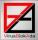

| Name |
Direct Link |
Manual |
adaware Rescue USB
|
http://lavasoft.com/download/adaware.iso |
https://www.adaware.com/rescue-USB |
| Avira AntiVir Rescue System |
https://install.avira-update.com/package/rs_avira/unix/int/rescue-system.iso |
https://www.avira.com/en/support-download-avira-antivir-rescue-system%20/ |
Avast Rescue Disk
|
todo |
https://help.avast.com/en/av_free/17/securityrescuedisk.html |
AVG Rescue CD
|
http://download.avg.com/filedir/inst/avg_arl_cdi_all_120_160420a12074.iso |
https://help.avast.com/en/av_free/17/securityrescuedisk.html |
Bitdefender Rescue CD
|
http://download.bitdefender.com/rescue_cd/latest/bitdefender-rescue-cd.iso |
https://www.bitdefender.com/support/how-to-scan-your-computer-with-bitdefender-rescue-cd-1263.html |
Comodo Rescue Disc
|
https://download.comodo.com/crd/download/setups/comodo_rescue_disk_2.0.261647.1.iso |
http://help.comodo.com/topic-170-1-414-4583-Changing-Boot-Order.html |
Dr.Web LiveDisk
|
https://download.geo.drweb.com/pub/drweb/livedisk/drweb-livedisk-900-cd.iso |
https://free.drweb.com/aid_admin/how_it_works/ |
| eScan Rescue Disk |
http://update1.mwti.net/download/tools/escanrd.iso |
http://download1.mwti.net/download/wikifiles/eScan_Rescue_Disk.pdf |
ESET SysRescue Live
|
https://download.eset.com/com/eset/tools/recovery/rescue_cd/latest/eset_sysrescue_live_enu.iso |
https://help.eset.com/sysrescue_live/en-US/?index.html |
G DATA BootMedium
|
https://secure.gd/dl-int-bootcd |
todo |
Norton Bootable Recovery Tool
|
https://support.norton.com/sp/static/external/NBRT/nbrt.iso |
http://www.norton.com/nbrt13 |
Kaspersky Rescue Disk 18
|
https://rescuedisk.s.kaspersky-labs.com/updatable/2018/krd.iso |
https://support.kaspersky.com/viruses/krd18#kb |
MS Windows Defender Offline
|
http://go.microsoft.com/fwlink/?LinkID=234124 |
https://support.microsoft.com/en-us/help/17466/windows-defender-offline-help-protect-my-pc |
Panda Cloud Cleaner ISO
|
http://acs.pandasoftware.com/pandacloudcleaner/rescuedisk/PandaCloudCleanerFull.iso |
https://www.pandasecurity.com/usa/support/card?id=1681 |
Panda Cloud Cleaner USB
|
http://acs.pandasoftware.com/pandacloudcleaner/rescuedisk/PandaCloudCleanerUSB.exe |
https://www.pandasecurity.com/usa/support/card?id=1678 |
Quick Heal Emergency Disk
|
https://www.quickheal.com/documents/emgtool/emgpkg64.zip |
https://www.quickheal.com/emgtool |
SOPHOS Bootable Antivirus
 |
todo iso |
https://community.sophos.com/kb/en-us/52011 |
Trend Micro Rescue Disk
|
https://www.trendmicro.com/content/dam/trendmicro/global/en/forhome/products/free-tools/rescue-disk/RescueDisk.exe |
https://www.trendmicro.com/en_us/forHome/products/free-tools/rescue-disk.html |
Vba32 Rescue
 |
https://distribution.anti-virus.by/VbaRescue.i686.7z |
http://anti-virus.by/pub/docs/english/Vba32%20Rescue%20User%20Guide%20English.pdf |
VIPRE Rescue
|
http://go.vipreantivirus.com/?linkid=1605 |
https://www.vipreantivirus.com/vipre-rescue-virus-removal-tool.aspx |
Zillya Live CD
|
http://download.zillya.com/zlive_en.iso |
https://zillya.ua/zillya-livecd |